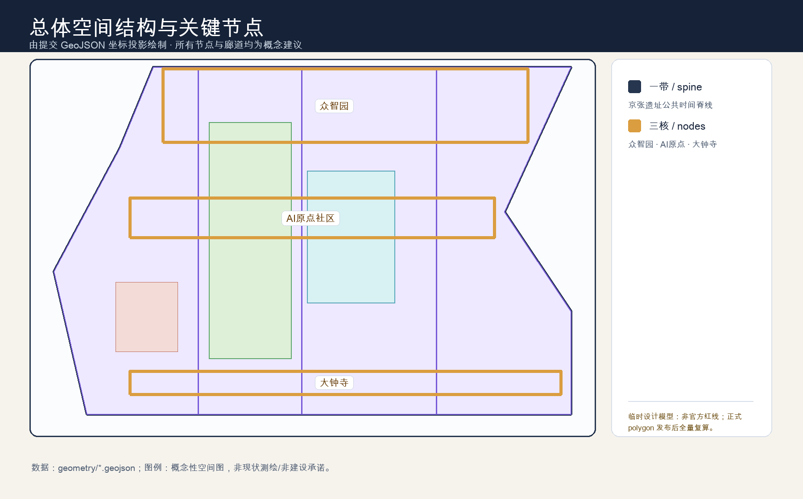
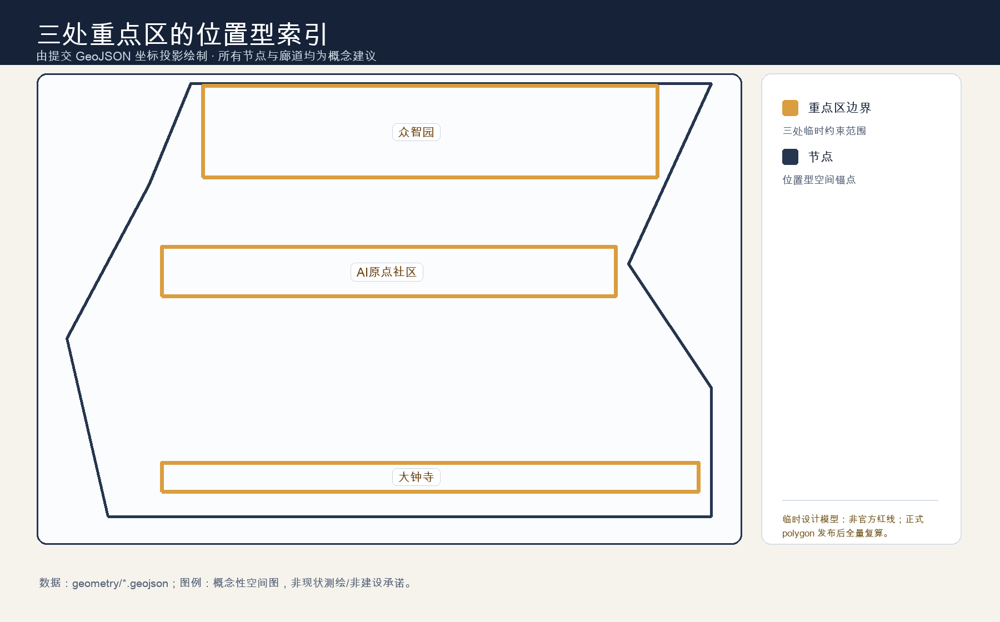
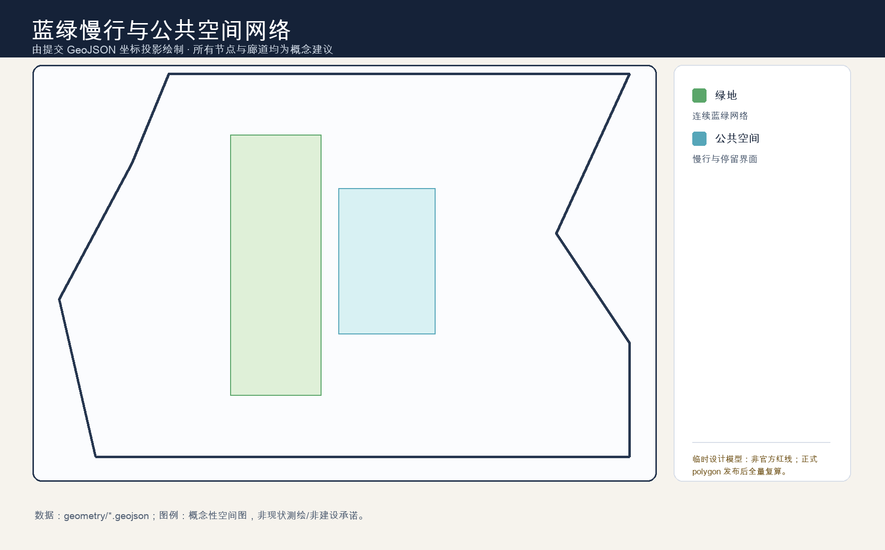
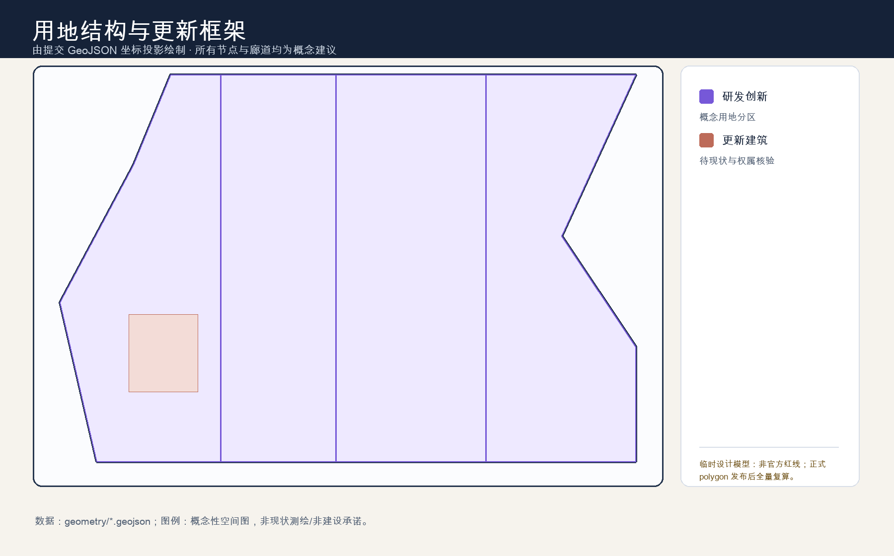

时间脊线标识
深蓝公共底板、薄荷绿慢行生态、赭红文化记忆、金色公共时刻。中英标准字、单色版、最小尺寸、留白与错误用法见 交付清单。
用一条公共时间脊线，将遗址、慢行、学习、协作与可暂停的 AI 服务连接起来。技术可关闭，公共生活不能停。




深蓝公共底板、薄荷绿慢行生态、赭红文化记忆、金色公共时刻。中英标准字、单色版、最小尺寸、留白与错误用法见 交付清单。
方向（去哪）—解释（为何在此）—参与（今天能做什么）；以铁路连接、中关村问题解决和 AI 回到人的时间为叙事。
众智园的研发/治理、AI 原点的人才/开源、大钟寺的展示/交流，与两翼的服务/场景互补；跨区域接口均为待确认的合作建议。
所有空间和运营内容均为概念建议，须经场地、数据、无障碍、安全和专业审查后才可能进入实践。
三层范围：统筹研究范围、总体设计范围、重点区域；图中同时表达用地分区、建筑与更新项目、交通慢行、蓝绿公共空间和 AI 场景的概念接口。
核心指标：见上方临时设计模型；自检状态：提交前重跑确定性、空间、视觉与专业证据检查；来源：sources.json 与报告案例表；假设：正式边界、控规、权属、市政与文保条件待补齐。